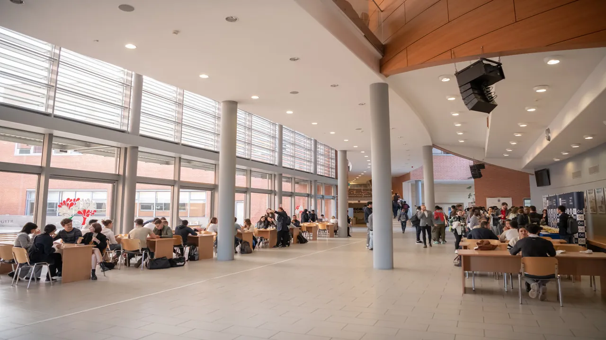
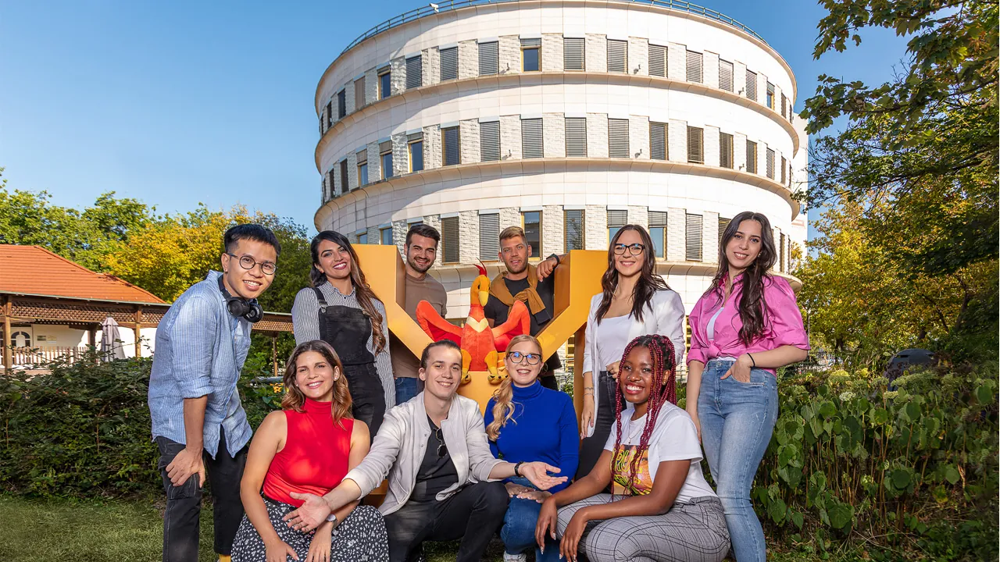
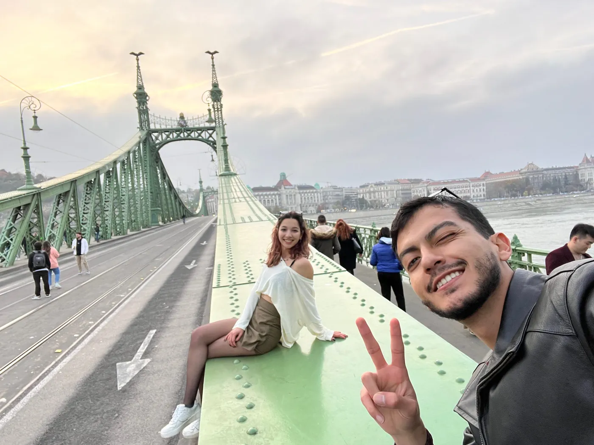
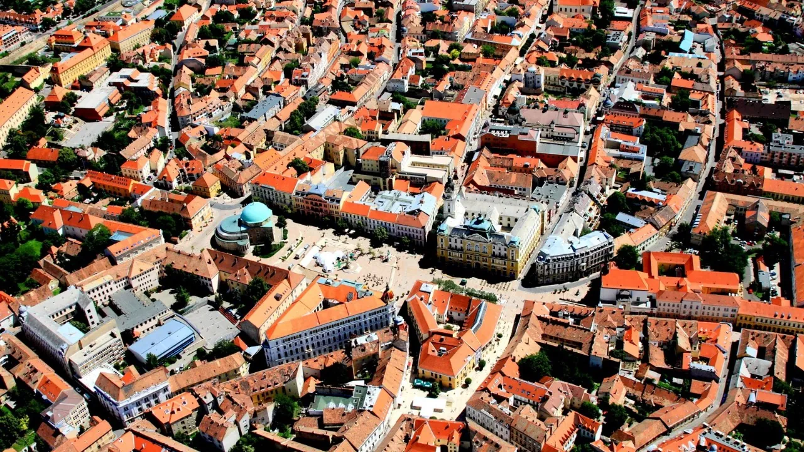

Macaristan'da öğrenci olarak yaşamanın aylık maliyeti yaklaşık 480 – 1.000 € arasında değişir ve bu aralığı belirleyen temel kalem konaklama tercihi olur. Ülkeye vardıktan sonraki ilk ay ise akademik olmaktan çok idari geçer; ikamet kaydı, üniversite kaydı, banka hesabı açılışı ve ulaşım kartı bu dönemde tamamlanır.
Hun Education olarak, Budapeşte ekibimizle öğrencilerimizi havalimanında karşılıyor ve yerleşim sürecinin tamamında yanlarında oluyoruz. Konaklama başvurusundan resmî işlemlere kadar ilk ayın her adımını birlikte planlıyoruz.
Öğrenciler nerede yaşar?

| Seçenek | Aylık | Kime uygun | Dikkat |
|---|---|---|---|
| Üniversite yurdu | 60 – 400 € | İlk yıl, dar bütçe | Kontenjan sınırlı; kabul gelir gelmez başvurun |
| Paylaşımlı dairede oda | ≈ 350 € | İkinci yıldan itibaren | Faturaların dahil olup olmadığını sorun |
| Stüdyo daire | ≈ 550 € | Çiftler, mahremiyet | Depozito ve faturalar ayrı |
En ucuz ile en pahalı seçenek arasındaki fark yılda birkaç bin euro; maliyet sayfasında konaklamanın dipnot değil ana bütçe değişkeni olarak ele alınmasının sebebi bu.
Bir ay ne kadar tutar?

| Kalem | Tutar | Not |
|---|---|---|
| Konaklama | 60 – 550 € | Belirleyici kalem |
| Market ve faturalar | ≈ 300 € | Ortalama öğrenci harcaması |
| Ulaşım kartı | 120 € | Öğrenci indirimi şehre göre değişir |
| Sağlık sigortası | 25 € | Yıllık ≈300 €, kayıt için zorunlu |
Şehirler farklı. Budapeşte en pahalısı; Debrecen, Szeged, Pécs ve Nyíregyháza hem kirada hem günlük giderde belirgin şekilde daha düşük.
İlk ayınız, adım adım

Varış ve yerleşme
Havalimanı karşılama, anahtar teslimi ve ilk alışveriş. Bu bölümü Budapeşte ekibimiz yürütür çünkü emniyet ağı olmayan kısım burası.
İkamet kaydı
Varıştan sonra iznin tanıdığı süre içinde tamamlanır. Kabul mektubu, konaklama kanıtı ve sigorta gerekir.
Üniversite kaydı
Kayıt haftası, öğrenci kartı, ders seçimi ve ders programı.
Banka hesabı ve ulaşım kartı
İkamet kartı ve öğrenci kartı çıktıktan sonra kolay; dördüncü sırada olmasının sebebi bu.
Kampüs dışında hayat



Macaristan'ın üniversite şehirleri kompakt ve yürünebilir; öğrenci hayatı da bunun etrafında yoğunlaşır. Budapeşte'de yoğunluk ve gece hayatı var; Debrecen ve Szeged'de öğrenci nüfusu şehrin tonunu belirleyecek kadar büyük; Pécs yürüyerek geçilecek kadar küçük ve merkezinde ülkenin en eski üniversitesi durur.
Toplu taşıma Avrupa ölçeğinde iyi ve ucuz; şehirlerarası tren Viyana, Bratislava ya da Krakov'a hafta sonu gitmeyi öğrenci bütçesiyle mümkün kılar.
Macarca bilmeden idare etmek
Dersleriniz İngilizce, üniversite idaresi uluslararası öğrenciyi İngilizce karşılıyor ve üniversite şehirlerinde günlük hayatı Macarcasız yürütebiliyorsunuz. Bunun dışında hızla incelir: belediye ve göç işlemlerinde, ev sahibiyle ve küçük esnafta Macarca bekleyin.
Çoğu üniversite başlangıç seviyesi Macarcayı ücretsiz ya da ucuza verir. Almaya değer; akıcılık için değil, ülkenin size verdiği karşılığı değiştirdiği için.
Sık sorulan sorular
Nerede ve nasıl yaşadığınıza göre aylık yaklaşık 480 – 1.000 €. Belirleyici kalem konaklama: yurt yeri 60 €'ya kadar inebilirken stüdyo daire 550 € civarında. Market ve faturalar yaklaşık 300 €, ulaşım kartı 120 €.
İkamet kaydı, üniversite kaydı, banka hesabı ve ulaşım kartı; kabaca bu sırayla. Hiçbiri tek başına zor değil; zor olan birbirine bağlı olmaları ve süreleri. Budapeşte ekibimiz tam olarak bunun için var.
Yurt daha ucuz, daha yakın ve daha sosyal; buna karşılık sayısı sınırlı ve çoğu zaman paylaşımlı ve kontenjan erken dolar. Önerimiz şu: yurda başvurun, kiralık daireyi de yedek olarak ayarlayın. Budapeşte ekibimiz iki seçeneği de sizin için takip eder.
Kaynaklar ve doğrulama
- Yaşam giderleri Macaristan'daki öğrencilerimizin gerçek harcama verisinden derlenir ve her akademik yıl yeniden doğrulanır.
- İkamet ve kayıt şartları Macaristan makamlarınca belirlenir ve değişebilir; güncel kuralları esas alınız.
- Yurt kontenjanı ve fiyatı her üniversitenin kendi kararıdır.
Değişiklik günlüğü
- : İçerik editoryal ve SEO denetiminden geçirildi; kaynak beyanları güncellendi.
- : Sayfa yayına alındı; ücret aralıkları, başvuru takvimi ve giriş sınavı şartları güncel veriyle yazıldı.